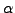

Next: About this document ...
Up: wiesn087752
Previous: wiesn087752
- 1
-
M. Sala and R. S. Tuminaro, A new Petrov-Galerkin smoothed
aggregation preconditioner for nonsymmetric linear systems, SIAM Journal
on Scientific Computing, 31 (2008), pp. 143-166.
- 2
-
Y. Notay, Algebraic analysis of two-grid methods: the nonsymmetric
case, Numer. Linear Algebra Appl., 17 (2010), pp. 73-96
- 3
-
M. Brezina, T. Manteuffel, S. McCormick, J. Ruge and G. Sanders, Towards Adaptive Smoothed Aggregation (SA) for Nonsymmetric
Problems, SIAM Journal on Scientific Computing, 32 (2010), pp. 14-39
- 4
-
J. Mandel, M. Brezina and P. Vanek, Energy optimization of
algebraic multigrid bases, Computing, 62 (1999), pp. 205-228
- 5
-
J. Brannick, M. Brezina, S. MacLachlan, T. Manteuffel, S. McCormick,
J. Ruge, An energy-based AMG coarsening strategy, Num. Lin. Alg.
Appl., 13 (2006), pp. 133-148
- 6
-
J. Brannick, L. Zikatanov, Algebraic Multigrid Methods Based on
Compatible Relaxation and Energy Minimization, Lecture Notes in
Computational Science and Engineering: Domain Decomposition Methods in
Science and Engineering XVI, 55 (2007), pp. 15-26
Copper Mountain Conference
2011-02-20